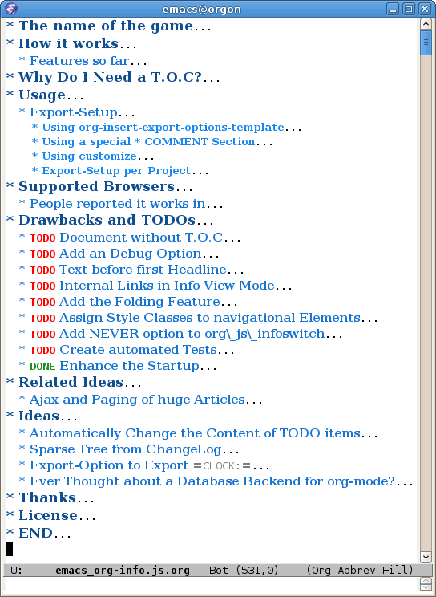

The org-info.js JavaScript (subsequently called the script) and its setup are still under development and might change frequently. This documentation might as well be outdated by the time you read this. If you don't mind using it anyway and adjust your org export options at times we wish you good luck and hope the fun will outweigh your effort.
The aim of this little script is to implement a part of emacs Org-mode facilities (folding in the first place) in the XHTML-exported files and to display them in a linuxdoc like way. This documentation is one XHTML file, exported from one *.org file using a single keyboard shortcut. No additional postprocessing was done.
There are no external dependencies. The script is quite small and fast enough
for larger files too. I tested it with the file ORGWEBPAGE/Changes.org in
the Org-mode package which gave me 225 pages to handle and on my old
omnibook it still worked nicely. The current version tries to do so over the
net too (see http://orgmode.org/Changes.html).
There are some drawbacks though. It is currently not possible to open internal links in another tab (e.g. using middle click in Firefox) due my poor JavaScript knowledge. This is not very high on my TODO list since the history mechanism of the script is a good alternative to tab usage.
The ChangeLog can be found here (come back here here by pressing 'b' there).
Go to the next section by pressing 'n'.
I tend to talk about view modes. One may toggle the view mode by pressing
'm' or click the toggle view link. Currently two view modes exist.
This mode displays the sections one by one, paged like the typical linuxdoc or texinfo files. This is the view mode you should face when first visiting this documentation.
This mode displays the entire file. In this mode the sections are foldable
by clicking the headlines or pressing 'f' (fold). The entire structure
of the document my be (un-)folded using 'g'.
T.O.C. is used for the table of contents. The table of contents may be
visited using 'i' (index) regardless of its visibility.
A section is everything with a headline.
One can click the script-generated links in info view mode to read through the whole file page by page. By clicking on 'toggle view' (or pressing `t´) you can switch between info and plain view mode.
When changing the view mode via the 'toggle view' links, the reader gets the same part of the document presented after the view change as he saw before.
See Section Navigation for a list of shortcuts.
The paging is done according to your setting of
org-export-headline-levels. Scanning the T.O.C. is a good way to get
around browser detection. An option to hide the T.O.C. exists.
You may cut the table of contents to a certain depth. The splitting of the document is not affected by this option. Hence you might set the level of headlines to 4, but cut the TOC to show only the first two levels.
The script optionally creates subindexes under the headline of a section
containing subsections not exceeding org-export-headline-levels. This
was done to get a more texinfo/linuxdoc kind of feel and a better
orientaton.
Choose how to display the document on load. Info-like or plain.
You may choose to display the 'toggle view' links above every headline or just next the current sections headline.
In info view mode every page gets a page number starting from one.
Info view mode only. Similar to the \markright command in LaTeX
the Title of the current sections parent appears on top of each page. In
subsections this heading can be use as link up to start of the parent
section (see top of this page when you're in info view mode). You can move
to the parent section by pressing `u´ (up).
All features are customizable simply by setting up your export options template (see Usage).
Moving the mouse on the navigation links shows a tooltip with name of next/previous section.
Emulates the way of folding in emacs Org-mode.
The exported pages can be linked to the homepage and an directory index or some other sort of parent file.
The T.O.C. can be hidden completly. Hittin 'i' still will show it. When
showing the T.O.C. hitting 'i' any navigation command ('n', 'p',
's'…) will trigger an history-back. Thus the T.O.C. will not get in your
way when navigating the history later on.
Internal links to section headings are automatically adjusted to work with
this script. When following such internal links, one may go back again
using 'b'.
If the URL is suffixed by '#sec-x.y.z' that section will be displayed
after startup.
The visitor of this file (and every XHTML-exported org file that includes the script) may use the mouse or the following keys to navigate the page:
| Key | Action | Info | Plain |
|---|---|---|---|
| n | next section | y | y |
| p | previous section | y | y |
| t or < | top. First section/T.O.C. | y | y |
| E or > | End. Last section | y | y |
| i | show T.O.C. | y | y |
| u | one level up (parent section) | y | y |
| s | prompt for section number | y | y |
| m | toggle view mode | y | y |
| v | scroll by 200 px | y | y |
| V | scroll back 200 px | y | y |
| ? | show shortcuts | y | y |
| h | follow the link 'UP' | y | y |
| H | follow the link 'HOME' | y | y |
| f | fold current section | y | |
| g | fold globaly | y |
The script always tries to keep the last selected section visible. This is somewhat strange when scrolling, but really helpfull for keyboard navigation.
If the keyboard shortcuts work for you, drop me a mail and tell me your browser and its version so we can put it on list of supported browsers.
The TOC is handled specially, when hidden. If you press 'i', the TOC is
displayed. Any subsequent key press goes back to where you've been before. The
TOC does not show up the history. Same applies to the keyboard help.
Find out about shortcuts in section Navigation (and come back here
pressing 'b').
'?', '¿' or 'l' will show all shortcuts available.
This section describes the setup of your org files for the utilisation of the
script. Export-Setup - the new Way will guide you to setup your org XHTML
export. That section refers to an Org-mode version >= 6.02. For those using an
Org-mode version < 6.02 the next section (Export-Setup - the old Way)
remains. Using Set() contains a list of all supported options for adjusting
the org_html_manager to suit your needs.
A sufficient up to date version is available for download on orgmode.org or in the git repo:
git-clone git://repo.or.cz/org-mode.git
This script will not work with the XHTML export as distributed with the current Org-mode package (and hence emacs 22.x) anymore (??). But I'm afraid there are good chances the new exporter is in emacs before this thing here enters a somewhat stable state :-)
To produce this XHTML file I used the current version of Org-mode and it's
XHTML export. The structure of the exported XHTML has changed a bit in
beginning of March 2008 to support scripting an other tools that work on
XML. Thanks to Carsten Dominik who found the time to modify the current
export modul to produce the draft version of the next generation XHTML. The
new structure won't break any of your stylesheets though.
The new export made it into git somewhere around version 5.23a+. Try M-x org-version to find out about your Org-mode version.
There is no need to do something you don't do occasionally in Org-mode when it comes to XHTML export. Just use one of the ordinary ways to include something into the head of the resulting html file.
The modern way of org export setup provides extra options to include and
configure the script, as well as a emacs customize interface for this same
purpose. Options set in customize may be overwritten on a per-file basis
using one or more special #+INFOJS_OPT: lines in the head of your org
file.
As an example, the head of this org file looks like:
#+INFOJS_OPT: path:org-info.js #+INFOJS_OPT: toc:nil localtoc:t view:info mouse:underline #+INFOJS_OPT: up:http://www.legito.net/ #+INFOJS_OPT: home:http://orgmode.org buttons:nil
To use customize type
M-x customize-group RET org-export-html RETscroll to the bottom and click
Org Export HTML INFOJS.
On this page three main options may be configured. Org Export Html Use Infojs is very good documented and Org Infojs Template should be perfect by default. So I'll concentrate on Org Infojs Options here.
path
Absolute or relative URL to the script as used in in XHTML
links. 'org-info.js' will find the file in the current
directory. Keep in mind that this will be the directory of the
exported file, eventually a directory on a server.
viewWhat kind of view mode should the script enter on startup? Possible values are
info — info view mode,
overview — plain view mode, only first level headlines visible,
content — plain view mode, all headlines visible,
showall — plain view mode showing the entire document.
toc
Show the table of contents?
Possible values:
t — show the toc,
nil — hide the toc (only show when 'i' is pressed),
Publishing/Export property — derivate this setting from another
property like org-export-with-toc.
localtoc
Should the script insert a local table of contents below the headings
of sections containing subsections?
Possible values:
t — show the local toc,
nil — hide the toc (only show when 'i' is pressed). This is
the default, if this option is omitted.
mouseHighlight the headline under the mouse in plain view mode?
underline — underline the headline under mouse,
#dddddd — or any valid XHTML/CSS color value like red to draw a
colored background for the headline under the mouse.
runs
Obsolete. See ChangeLog.
Number of attempts to scan the document. It's no risk to set this to a
higher value than the default. The org_html_manager will stop as
soon as the entire document is scanned.
buttonsAffects plain view mode only.
A single file may overwrite the global options using a line like this:
#+INFOJS_OPT: view:info mouse:underline up:index.html home:http://www.mydomain.tpl toc:t
Possible options are the same as in the previous section. Additional (?) options include:
home
An URL to link to the homepage. The text displayed is HOME.
up
An URL pointing to some main page. The text displayed is Up.
This section describes the old way to setup the script using the
org-export-html-style configuration. If you own a current version (6.00
++) of Org-mode you should better use Export-Setup - the new Way of setting
up the export for script usage. You might want to read the sections The XHTML
for more information. Using Set() contains a list of all supported options
recognised by the script.
The second possibility to include the script is to add a special section to the end of your org file (multiple lines possible):
* COMMENT html style specifications # Local Variables: # org-export-html-style: "<link rel=\"stylesheet\" # type=\"text/css\" href=\"styles.css\" /> # <script type=\"text/javascript\" language=\"JavaScript\" src=\"org-info.js\"> # </script> # <script type=\"text/javascript\" language=\"JavaScript\"> # /* <![CDATA[ */ # org_html_manager.set(\"LOCAL_TOC\", 1); # org_html_manager.set(\"VIEW_BUTTONS\", \"true\"); # org_html_manager.set(\"MOUSE_HINT\", \"underline\"); # org_html_manager.setup (); # /* ]]> */ # </script>" # End:
Ensure to precede all the verbatim double quotes with a backslash and
include the whole value of org-export-html-style into double quotes
itself.
One could customize the option 'org-export-html-style' globaly by
M-x cuomize-variable RET org-export-html-style RETand set it there.
<script type="text/javascript" language="JavaScript" src="org-info.js"></script>
<script type="text/javascript" language="JavaScript">
/* <![CDATA[ */
org_html_manager.set("LOCAL_TOC", 1);
org_html_manager.set("VIEW_BUTTONS", "true");
org_html_manager.set("MOUSE_HINT", "underline");
org_html_manager.setup ();
/* ]]> */
</script>
This way all your files will be exported using the script in the future.
Last but not least and very handy is the possibility to setup the usage of the script per project. This is a taylor made passage of the org manual:
(setq org-publish-project-alist
’(("org"
:base-directory "~/org/"
:publishing-directory "~/public_html"
:section-numbers nil
:table-of-contents nil
:style "<link rel=stylesheet href=\"../other/mystyle.css\"
type=\"text/css\">
<script type=\"text/javascript\" language=\"JavaScript\"
src=\"org-info.js\"></script>
<script type=\"text/javascript\" language=\"JavaScript\">
/* <![CDATA[ */
org_html_manager.setup ();
/* ]]> */
</script>")))
Don't forget to add an export target for the script itself ;-)
Just use the ordinary link syntax to link to files that use the script. Append the section to the URL if neccessary:
http://www.domain.tld/path/to/org.html#sec-3.4
One may overwrite the author's settings using special suffixes appended to the URL of the script. Here are some examples linking to this section and changing the intial view mode. Currently only the 'internal' options are used (see [Using set()] for a list).
Note that it is not possible to change the 'HOME' and 'Up' links.
There is currently only one CSS class used in the script. More style classes will follow in the future.
org-info-info-navigationStyle for the navigation table in info view mode. I needed this one to avoid border around that table. You may add lines like these to your stylesheet:
/* Style for org-info.js */
.org-info-info-navigation
{
border-style:none;
}
The functionality of the script is based on DOM. This leads to some
incompatibility with legacy browsers. But hey, it's 2008, isn't it?
So what browsers are supported then? Well - I do not know for
shure. JavaScript™ 1.4 plus DOM should make
I have written and tested the script only in current Firefox and Opera so far (lack of spare time, operation systems on my laptop, and installed browsers). The test results will go in the next section.
So let's gather the tested Browsers here. Problems are only listed, if they are Browser specific. Let me say it again: we don't wont to support legacy browsers, do we?
| Browser | Version | ✔ | Problems |
|---|---|---|---|
| Opera | 9.26 | ✔ | - |
| Iceweasel | 2.0.0.12 | ✔ | - |
If you manage to get this thingy working in any browser please let us know, so we can update the above table.
Currently the script depends on the table of contents in the resulting XHTML. The T.O.C. can be hidden though.
The main reason is the behaviour of browsers. There is no safe way to detect
if the entire document is loaded at a certain point in time. Opera for example
returns true if we ask it if(document.body). The init() function of the
OrgHtmlManager is aware of the possibility, that not even the T.O.C. might
be loaded when this function is called. Hence it should work for slow
connections too. There should be tons of other bugs though :)
End users may consider this section obsolete as of org version 6.00-pre-3, since there is a new configuration interface in org now to setup the script without dealing with JavaScript. It is still here to show the desired look of the head section of the XHTML. Also someone might be interested to use the script for XHTML files not exported from org.
The script has to be included in the header of the resulting XHTML files. The
document structure has to be exactly the one produced by the current XHTML
export of emacs Org-mode.
You may pass options to the org_html_manager by utilising its set()
method. For a list of options see section Using Set(). This is what the
head section should look like:
<script type="text/javascript" language="JavaScript" src="org-info.js"></script>
<script type="text/javascript" language="JavaScript">
/* <![CDATA[ */
org_html_manager.set("SUB_INDEXES", 1);
org_html_manager.set("TOC", 1);
org_html_manager.set("VIEW_BUTTONS", "1");
org_html_manager.set("MOUSE_HINT", "underline"); // or background-color like '#eeeeee'
org_html_manager.setup ();
/* ]]> */
</script>
To just use the script with the defaults put this into the head section of the XHTML files:
<script type="text/javascript" language="JavaScript" src="org-info.js"></script> <script type="text/javascript" language="JavaScript"> /* <![CDATA[ */ org_html_manager.setup (); /* ]]> */ </script>
I recommend the use of
<script type="text/javascript" language="JavaScript" src="org-info.js"></script>instead of
<script type="text/javascript" language="JavaScript" src="org-info.js" />which is valid XHTML but not understood by all browsers. I'll use the first version throughout this document where ever the space allows to do so.
Before calling
org_html_manager.setup ();one may configure the script by using the
org_html_manager's function
set(key, val). There is one important rule for all of these options. If
you set a string value containing single quotes, do it this way:
org_html_manager.set("key", "value with \\'single quotes\\'");
VIEW
Set to a true value to start in textinfo kind of view. Note: you
could also use org_html_manager.INFO_VIEW or
org_html_manager.PLAIN_VIEW. Defaults to plain view mode.
HIDE_TOC
If 1, hide the table of contents.
SUB_INDEXES
If set to a true (1 or not empty string) value, create subindexes
for sections containing subsections. See sections 1 2, or 3.1 of this
document. The index below the headline (under 'Contents:') is generated
by the script. This one is off by default.
VIEW_BUTTONS
If true, include the small 'toggle view' link above every headline in
plain view too. The visitor can toggle the view every where in the file
then. If false, only at the top of the file such a link is displayed
when in plain view. Default is false.
MOUSE_HINT
Highlight the heading under the mouse. This can be a background color
(like '#ff0000' or 'red') or the keyword 'underline'.
LINK_UPMay be set, to link to an other file, preferably the main index page of a subdirectory. You might consider using an absolute URL here. This link will be displayed as
<a href="LINK_UP">Up</a>Command: '
h' - home::
This way we can link files into a tree, if all subdirectories in the
project follow the same conventions. Like containing some
subdir/index.org and a homepage somwhere else.
LINK_HOMEMay be set, to link to an other file, preferably the main home page. You must use an absolute URL here. This link will be displayed as
<a href="LINK_HOME">Up</a>Command: '
H' - HOME::
This way we can link files into a tree, if all subdirectories in the
project follow the same conventions. Like containing some
subdir/index.org and a homepage somwhere else.
TOC_DEPTH
Cut the T.O.C. at a certain level. This was done to support big big
files and was requested by Carsten Dominik. If '0' or not provided at
all the T.O.C. will not be cut. If set to a number greater than '0',
the T.O.C. will cut to only show headlines down to that very level.
First of all the script is included in the header as described in Usage. The document has to be exported with T.O.C. since the script depends on it (See Why Do I Need a T.O.C?).
When included, it creates a global JavaScript™ variable named
org_html_manager.
The org_html_manager::setup() function, that you will have to call
yourself (see examples in Usage), sets up a timeout function calling it's
init() function after 50ms. After those 50 ms The init() function starts
it's first attempt to scan the document, using the T.O.C. as a guide. During
this scan the org_html_manager builds a tree of nodes, each caching some
data for later use. Once an element of the document is scanned it is marked by
setting a property scanned_for_org to 1. This way it will not be scanned
a second time in subsquent runs (it will be checked though, but no work will
be done for it).
If the document (or the T.O.C.) is not entirely loaded, org_html_manager
stops scanning, sets the timeout again to start an other scan 50 ms
later. Once the entire document is loaded and scanned no new timeout will be
set, and the document is displayed in the desired way (hopefully).
Once the number of attempts to scan the the document was configurable. This was dropped, since we can not know in advance how fast the document will be loaded on the client side.
The org_html_manager also changes the document a bit to make it react on
certain input events and follow your wishes. The old 'event handling' was
entirely based on the normal link functions using so called accesskeys. This
has changed a little, but is still only in experimental state. The accesskeys
will stay cause there is no reason to remove them.
There is still the idea of a new emacs like keyboard handling to implement complex commands (which is still in the far future).
Now the user may call the script and pass options to overwrite the authors settings using this syntax:
http://localhost/index.html?TOC=0&VIEW=showall&MOUSE_HINT=rgb(255,133,0)Some links for testing are provided in section Overwriting the Author's settings
'i' tries to focus the T.O.C. if FIXED_TOC is ="1". This is still very primitive. Just the first step. '=i' simply focusses the first
anchor in the T.O.C. Tabindexes empower the user to run through the links
in the table of contents using the TAB key.
The start section (index.html#sec-X.Y) was not shown in plain view mode. Now this section is always shown regardless of initial folding state and view mode.
u' several times
Hitting 'u' multiple times made the script focus the root node so that
'n' went to the first section. Fixed.
Trying a different technique to make IE handle the clicks on headlines. Can't test this now in IE but don't want to forget the trick :)
'l' prints an Org link in the minibuffer for copying to an org
file. Currently it's only possible to copy the link using the mouse. A
change of this is on my TODO list.
Since 'i' now shows the T.O.C. there was a shortcut missing to go to the
first section (which might as well be the T.O.C. if #+INFOJS_OPT: toc:t). This key is now 't' or '<'. For toggling the view mode, 'm' is used
from now on.
'E' or '>' move to the last section.
To show the help screen one may use the '¿' key. The help-screen got
upated using '¿' now to avoid distorted displaying of this
character.
Style class for the navigation bar in info view mode.
Documentation reworked. Should be fairly uptodate now.
The minibuffer was not removed when unsing the mouse to navigate. Fixed.
'n' now unfolds the current section if folded when in plain view
mode. Thus the first section will be shown after startup in folded view.
This one was broken. Fixed.
No more OrgHtmlManager class anymore. Script uses the
var org_html_manager = { property: value, /* ... */ };
syntax now. This was done to avoid inheritance and instantiation of more
than one OrgHtmlManager.
The displaying of Keyboard shortcuts now behaves like the (hidden)
TOC. I.e. keyboard shortcuts are displayed when pressing '?' and any
hidden again when pressing any key. The old view mode is restored when
hiding the help display.
External links now work again.
If the document is neither in info view mode nor displayed with a fixed TOC, the minibuffer will be shown right above the current headline. This is not the final fix for this, but a work around for the wrong IE behaviout concerning position:fixed.
The script now takes the onkeypress function to read user input. This is
more compatible then onkeydown or onkeyup. Thus the keys work now in
IE too (and the '?' key in Firefox). Holding the 'n' key down for a
while can be used for fast searching.
…is fixed. But it is not possible to scroll in IE if FIXED_TOC is on.
The option 'RUNS' is dropped now. The org_html_manager now tries to
scan the document until it's entirely loaded. There is an internal limit
now set to some hundred runs which will makes a max. ~2 minute scan
phase.
These two changes where ideas of Carsten Dominik.
…shows now subsections only.
Now the table of contents may be cutted to a certain depth. Navigation is
not affected. The name of the new set() option is 'TOC_DEPTH'.
History now records all commands that change the current section.
The TOC is now always shown, when 'i' is pressed, even if hidden from
the document. The fun is, that each following navigation command triggers
a history-back event. This way the hidden TOC does not show up when moving
in the history thereafter. Hence now it's possible to read section 5.1,
take a short look in the TOC and the next 'n', 'p' or 'b' command
takes you back to the section last visited (5.1 in this case).
It now appears and hides again. Thanks to Tobias Prinz for the trick with negative margins.
set() functions are now adjusted to
the ones we discussed. Internal variable names where changed to reflect
this change.
…when using HIDE_TOC. First section had no subindex in this case.
…to close the window.
Internal links are now converted to work with this script. The user has to go back using the `=s=' key since the history is not updated. Could Browsers understand this? Or is there a possibility to catch the `/back/' button event?
is now working too. That is, http://path/to/org-file.html#sec-x.y.z makes the script displaying that section in the configured view mode.
'v' and 'V' now scroll the window by the visible height of the
document window. A little bit less though for better orientation.
This one was not working. I'm not shure it ever was… but I think so. I should look up this one in the documentation again.
and thus the candidate for displaying in next info view and the point from where 'next' and 'previous' work.
The title was doubled in some cases. This should be fixed now. The TOC is now a node as all the other sections to.
Some more work on this. There seems to be some locale related problem concerning the keyboard input of a `?´ (help) in Firefox. Added a workaround for this one, but probably only working here.
now with indentation. This demonstrates the folding somewhat better.
The table of contents can now be hidden completely due to the new option
HIDE_TOC. Hence the documents have to be exported with T.O.C., but may
be displayed without it.
The 'minibuffer' is now invisible by default. Commands can be entered
into the document itself. Still, the chars entered are appended to the
minibuffers contents, to keep the possibility to enter more complex
commands in the future. The minibuffer is still needed for commands to
work in firefox.
window.prompt()This was done to simplify the command interface code. Now the commands entered are just one char in length.
There was not much to do left for this one to do.
May be set, to link to an other file, preferably the main index page. This link will be displayed as
<a href="LINK_UP">HOME</a>Command: '
h' - home
May be set, to link to an other file, preferably the main index page. This link will be displayed as
<a href="LINK_TO_MAIN">Up</a>Command: '
H' - HOME
This way we can link files into a tree, if all subdirectories in the
project follow the same conventions. Like containing some
subdir/index.org and a homepage somwhere else.
First attempt to get the global folding working. Hmm.
?' - show the little help screen.
n' - go to next section.
p' - go to previous section.
i' - go to Index.
f' - fold current section when in plain view mode.
g' - fold globally when in plain view mode.
u' - up to parent section.
t' - toggle view mode.
v' - scroll down.
V' - scroll up.
Removed unused variables and functions. More secure, less errorprone. This cood be even better.
This needs some special style settings for IE (position fixed). I will append a minimal stylesheet for this purpos the next days in this documentation for copy and paste. This is partially working. Implemented Commands are:
help' - show a little help screen. This done with alert() and
thus a TODO.
t' - toggle view mode.
k' - kill the minibuffer.
N' - where N is a section number: goto section N. This could be
working in both modes very easy, but currently also only in info view
mode implemented.
May be turned on bei seting config options:
org_html_manager.set("WINDOW_BORDER", "true");
org_html_manager.set("DEBUG", org_html_manager.DEBUG_FATAL);
variables when scanning starts. The users my use the set(key, value)
function of the OrgHtmlManger class like this:
org_html_manager.set ( "SUB_INDEXES", 0); org_html_manager.set ( "INFO_SWITCH_ALWAYS", "true"); org_html_manager.set ( "FOLDING", "true"); org_html_manager.set ( "MOUSE_HINT", "underline"); org_html_manager.set ( "CONSOLE", "true"); org_html_manager.setup ();
SUB_INDEXESCreate subindexes for sections containing sections.
INFO_SWITCH_ALWAYSShow the small 'toggle view' link next to every Headline to toggle the view easily without scrolling back to top of the page in plain view mode.
FOLDINGThis is for the new folding. Turn it on. This will be the default when the moving and toggling has an acceptable form.
MOUSE_HINT
I love this one. Accepts the keyword 'underline' or any other
value. But if not 'underline', it should be a valid value to set the
background-color in CSS. So preferebly something like
'#eeeeee'. In plain view mode with toggle feature turned on the
headline with mouse in it will be either hightlighted, if you pass a
color, or underlined.
CONSOLE
Display the minibuffer on top of the screen. Turn this one on. It's
fun and you can kill it simply by pressing 'k'.
VIEW
Set the initial view mode. Set to org_html_manager.PLAIN_VIEW or
org_html_manager.INFO_VIEW.
The aim of this little script is to implement a part of emacs Org-mode facilities of folding. Oh, no - not originaly.
My first idea was to view some of my larger org files without scrolling. I wanted to have them paged just like texinfo or linuxdoc files. In February 2008 I came across Carsten Dominiks ideas page http://orgmode.org/todo.html. And I could not resist to write him some of my thoughts about this great emacs mode including some little ideas and drawbacks. I don't know how, but it somehow these guys made me, lazy bone that I am, write this little script as an apetizer of web 3.0 in Org-mode (Phil Jackson).
I did and since some people really liked it, worked a bit more on it and added features. Bastien Guerry was so kind to publish it on http://www.legito.net/org-info-js/ the first months. Thanks Bastien.
In the first days of April Carsten Dominik added code to Org-mode to support the usage of this script. Hence the script may now be configured in a similar way to the other export options. Since then it is even possible to configure this script through customize.
Very special thanks to Carsten Dominik, Bastien Guerry and Phil Jackson who have encouraged me to write and publish this little piece of (unfinished) work and all the hundrets of hours they spent on this fantastic emacs mode called Org-mode and the export modules.
Org is a new working experience for me and there is nothing comparable to working with emacs AND Org-mode.
An other big kiss to Gabi (www.emma-stil.de) for being so patient while I was not working on our projects but playing with emacs.
Thanks to Tobias Prinz for listening to my stupid JavaScript questions and all the usefull tips. Espacially the negative margin trick and key input.
And again big thanks to Carsten Dominik for making the inclusion and configuration of the script so easy for the users, and all the inspired ideas. A lot of the power of the final make up is your merit! We all love to read the best of all mailing lists because of the kind and relaxed tone that is yours.
What I think about licenses? Well - I think licences and patents are not far from each other. Poor people (and poor countries!!!) stay poor because of both of them. But since I know where I live, in a world made of licenses and patents, I have to apply some license to my work to protect it and stay unprotected.
Hence the script itself is provided under the GPL version 2. This document is subject to GFDL.
This document in emacs23 with Org-mode v. 5.22a+. The visibilty of the
contents of a individual section or subsection can be toggled by clicking the
stars in front of the headlines or moving there and hitting TAB. The
visibility of the entire document structure can be changed by pressing
SHIFT+TAB anywhere. When on a headline, pressing ALT+UP/DOWN moves the
entire subtree to different location in the tree, keeping it's level of
indentation. ALT+LEFT/RIGHT promotes and demotes the subtree.

Date: 2008/05/18 05:42:50